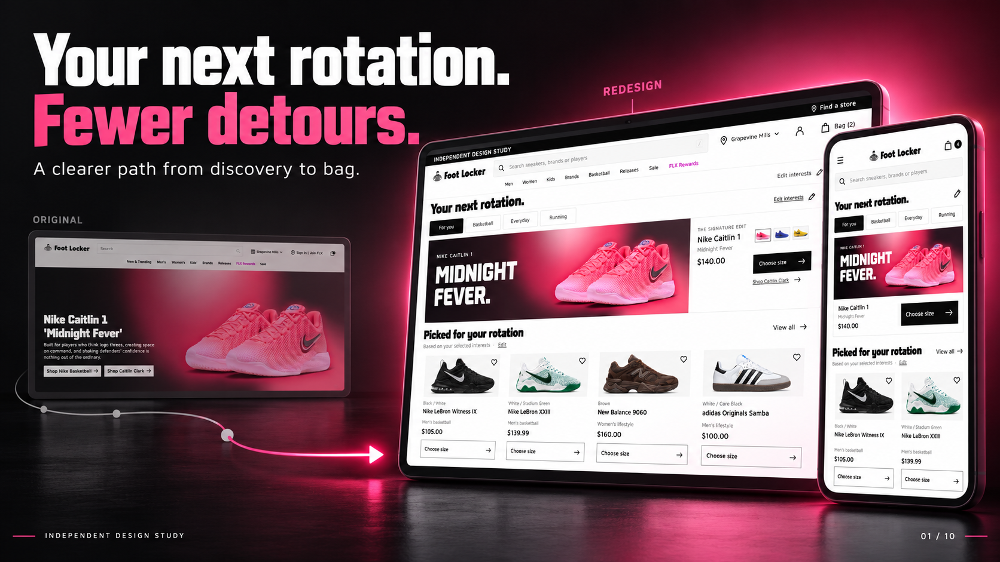

Download frame01 / 10

The preview is a timed slideshow with subtle whole-frame movement, not a rendered motion video. Native images: 1672 × 941 PNG (approximately 16:9). Revenue and conversion statements are targets or hypotheses, not measured uplift.